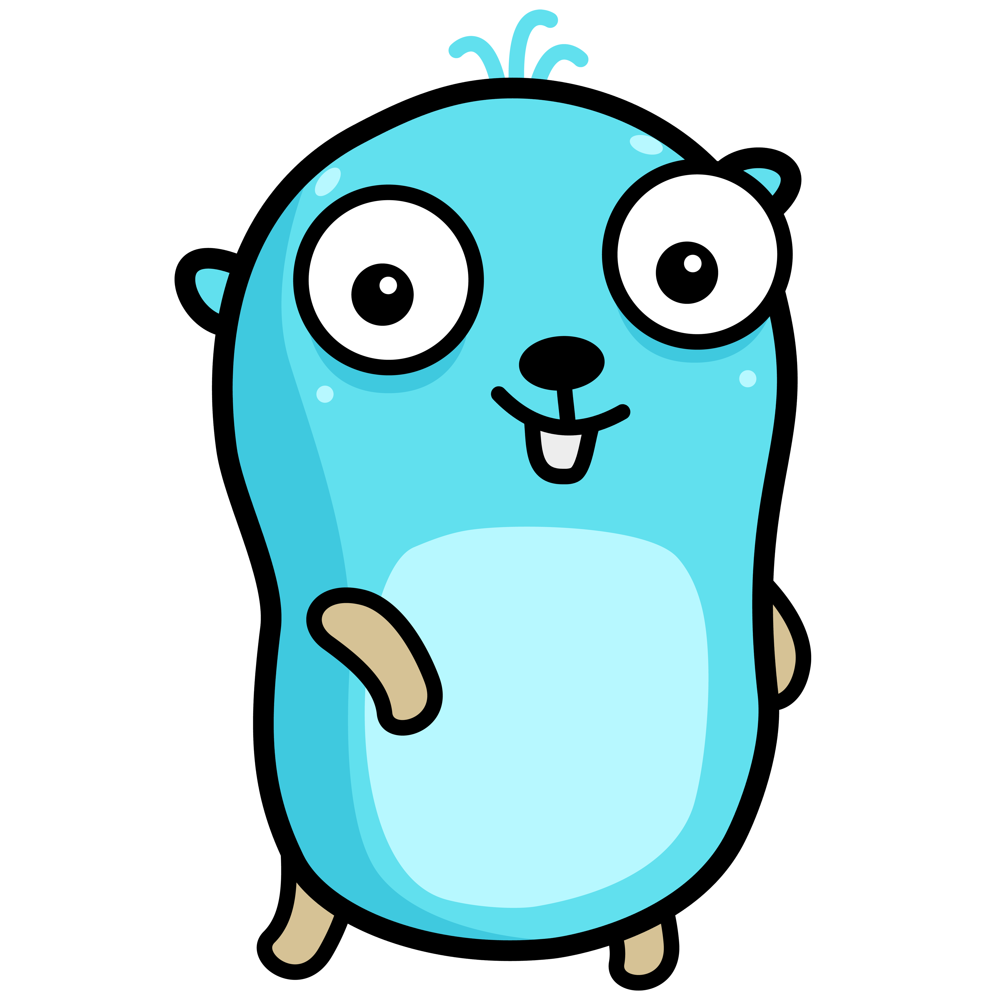

Motivation
Design Goals
What we've got
go mod, go vet, go fmtSIMPLICITY
The Gopher Mascot
Used by
The Inevitable Example
main.go
package main
import "fmt"
func main() {
fmt.Println("hello audience")
}
$ go run main.go hello audience
// declaration
const
func
import
package
type
var
// type denotations
chan
interface
map
struct
// control flow
if else
switch case default
break continue fallthrough
for goto range
return
select
// function call
// control flow
defer
go
| C# (8.0) | 107 |
| Kotlin (1.4) | 79 |
| C++ (98) | 74 |
| Java (SE 17 LTS) | 67 |
| Python (3) | 38 |
| C (ANSI) | 32 |
| Go (1.23) | 25 |
bool
string
(u)int, (u)int8, (u)int16, (u)int32, (u)int64
byte // (alias for uint8)
rune // (alias for int32, represents a Unicode code point)
float32, float64
complex64, complex128
// type definition; a new type based on an int
type CustomerNumber int
// type alias; just a different name for the string type
type EMail = string
var value int // empty integer, default value is 0
var value int = 42 // assigned integer value
var value = 42 // same with type inference
value := 42 // shorthand with type inference
value, emoji := 42, "😎" // multiple declarations
const value = 42 // constant value, type inferred
// An Array is just a fixed-size list of elements
var list [3]int // array of length 3
list[0] = 1 // assign value to index 0
fmt.Println(list) // => [1 0 0]
list := [3]int{1, 2, 3} // initialized with 3 elements
fmt.Println(len(list)) // => 3 (len -> length)
// A Slice is a special representation
// of an array with a dynamic size
var slice []int // empty slice
slice := make([]int) // empty slice
slice := make([]int, 0, 100) // empty slice with capacity=100
slice[0] = 1 // assign value to index 0
slice := []int{1, 2, 3} // initialized with 3 elements
slice = append(slice, 4) // append value to slice
fmt.Println(slice) // => [1 2 3 4]
fmt.Println(len(slice)) // => 4
fmt.Println(slice[1:2]) // => [2] (slicing)
// A Map is a collection of key-value pairs
var dict map[string]int // empty map
dict := make(map[string]int) // empty map
dict := map[string]int{"key": 42} // initialized
dict["key"] = 42 // assign value to key
value := dict["key"] // getting value of key
value, ok := dict["key"] // getting value, check existence
fmt.Println(value, ok) // => 42 true
delete(dict, "key") // delete key-value pair
clear(dict) // clear all key-value pairs
// A Struct is a collection of fields
type Session struct {
Name string
Room string
Time time.Time
}
session := Session{
Name: "Introduction to Go",
Room: "Moritzburg",
Time: time.Date(2024, 9, 25, 10, 0, 0, 0, time.UTC),
}
session.Time = time.Now()
// no need for clamps around conditions
if a == b {
// ...
} else if b == c {
// ...
} else {
// ...
}
// There is no ternary if in Go!
for i := 0; i < 3; i++ {
// ...
}
for i <= 3 {
i = i + 1
}
for {
// ...
}
for i := range 3 {
// ...
}
list := []int{1, 2, 3}
for i, v := range list {
// i ... index
// v ... value
}
dict := map[string]int{"key": 1}
for k, v := range dict {
// k ... key
// v ... value
}
// break / continue are possible
// as usual inside loops
goto statement available, which you can use with myLabel:
for unconditional jumps from the goto to the labeled statement in the same function.
switch weekday {
case time.Friday:
// work & do not deploy
case time.Saturday,
time.Sunday:
// relax
default:
// work
}
// no break needed
// without expression
switch {
case mealType == "breakfast":
// eat
fallthrough
case mealType == "coffee":
if noCoffee {
// for tea drinkers
break
}
// drink
default:
// not hungry/thirsty
}
func add(a int, b int) int {
return a + b
}
func add(a, b int) (sum int) {
sum = a + b
return
}
func bounds(list []int) (int, int) {
// ...
return lower, upper
}
type Session struct {
Name string; Room string; Time time.Time
}
func (s Session) String() string {
t := s.Time.Format(time.DateTime)
s := fmt.Sprintf("%s in %s at %s", s.Name, s.Room, t)
return s
}
s := Session{
// ...
}
fmt.Println(s.String())
// => Introduction to Go in Moritzburg at 2024-09-25 10:00:00
// declaration
✓ const
✓ func
✓ import
✓ package
✓ type
✓ var
// type denotations
chan
interface
✓ map
✓ struct
// control flow
✓ if else
✓ switch case default
✓ break continue fallthrough
✓ for goto range
✓ return
select
// function call
// control flow
defer
go
// ./user/user.go
package user
type User struct { // User is exported
Name string // exported field
active bool // private field
}
// ./main.go
package main
import "user"
user := user.User{Name: "Alice"}
user.active = true // not possible
var pointer *int // default value is nil
fmt.Println(pointer == nil) // => true
value := 1
pointer = value // not possible, int vs *int
pointer = &value // possible, pointing to the address of value
*pointer = value // possible, dereferencing to current value
// Stringer is an built-in interface
type Stringer interface {
String() string
}
type Session struct { /* ... */ }
func (s Session) String() string { /* ... */ }
func print(s Stringer) {
fmt.Println(s.String())
}
package user
func persist(u User) error { /* ... */ }
func Create(name string) (User, error) {
// ...
err := persist(u)
if err != nil {
return User{}, err
}
return u, nil
}
error
func f(from string) {
fmt.Println(from)
}
func main() {
f("direct")
for i := range 10000 {
from := fmt.Sprintf("goroutine %d", i)
go f(from)
}
time.Sleep(3*time.Second)
fmt.Println("done")
}
// direct
// ...
// goroutine 9981
// goroutine 3953
// goroutine 9982
// ...
// done
go executes functions concurrent
messages := make(chan string)
go func() { messages <- "ping" }()
msg := <-messages
channel <- value syntax to send into a channel<-channel syntax to receive from a channel
defer keyword, closures)select keyword)Important: no blaming
Java
Javascript
Ruby
Go 👍
Feedback welcome!
E.g., ask yourself:
Have I learned something new today?